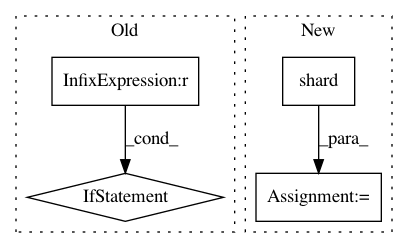

9002118376e1912bb70ef1f1de2b71315b2e869f,examples/mnist/tf/mnist_dist_pipeline.py,,map_fun,#Any#Any#,24
Before Change
tf.summary.histogram("softmax_weights", sm_w)
// Placeholders or QueueRunner/Readers for input data
num_epochs = None if args.epochs == 0 else args.epochs
images = TFNode.hdfs_path(ctx, args.tfrecord_dir)
x, y_ = read_tfr_examples(images, 100, num_epochs)
x_img = tf.reshape(x, [-1, IMAGE_PIXELS, IMAGE_PIXELS, 1])
After Change
tfr_files = tf.gfile.Glob(tf_record_pattern)
ds = tf.data.TFRecordDataset(tfr_files)
parse_fn = _parse_tfr
ds = ds.shard(num_workers, task_index).repeat(args.epochs).shuffle(args.shuffle_size)
ds = ds.map(parse_fn).batch(args.batch_size)
iterator = ds.make_initializable_iterator()
x, y_ = iterator.get_next()
x_img = tf.reshape(x, [-1, IMAGE_PIXELS, IMAGE_PIXELS, 1])
In pattern: SUPERPATTERN
Frequency: 3
Non-data size: 4
Instances
Project Name: yahoo/TensorFlowOnSpark
Commit Name: 9002118376e1912bb70ef1f1de2b71315b2e869f
Time: 2018-06-25
Author: ycai@oath.com
File Name: examples/mnist/tf/mnist_dist_pipeline.py
Class Name:
Method Name: map_fun
Project Name: yahoo/TensorFlowOnSpark
Commit Name: ed49d7d7a6576d825bed21330f5877d387f3c898
Time: 2018-07-05
Author: ycai@oath.com
File Name: examples/mnist/tf/mnist_dist_pipeline.py
Class Name:
Method Name: map_fun
Project Name: yahoo/TensorFlowOnSpark
Commit Name: ed49d7d7a6576d825bed21330f5877d387f3c898
Time: 2018-07-05
Author: ycai@oath.com
File Name: examples/mnist/tf/mnist_dist_dataset.py
Class Name:
Method Name: map_fun